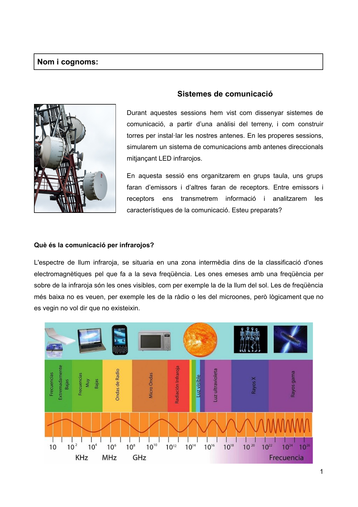
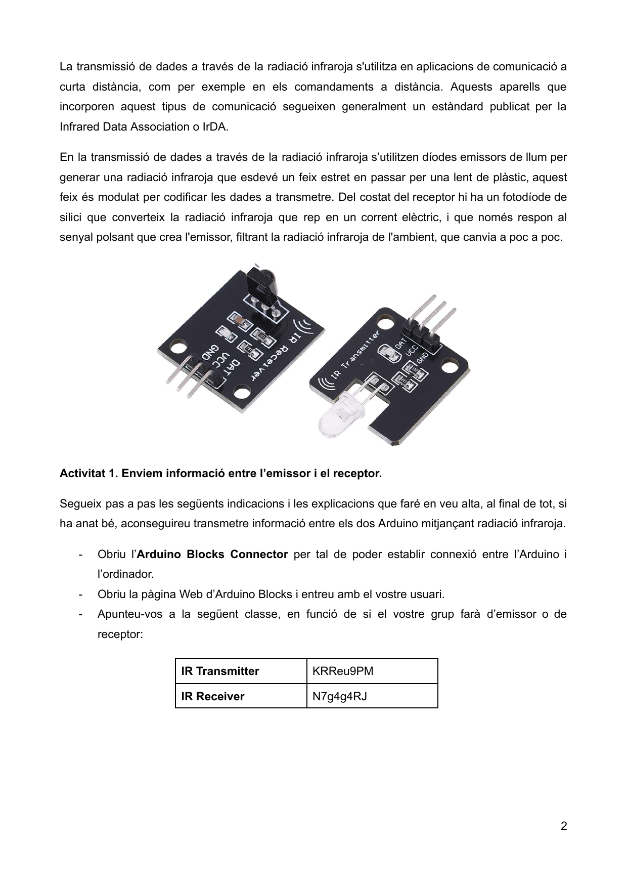
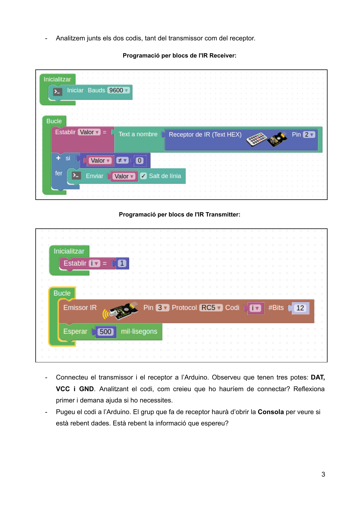
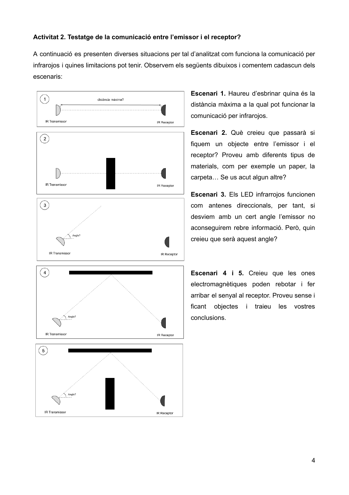
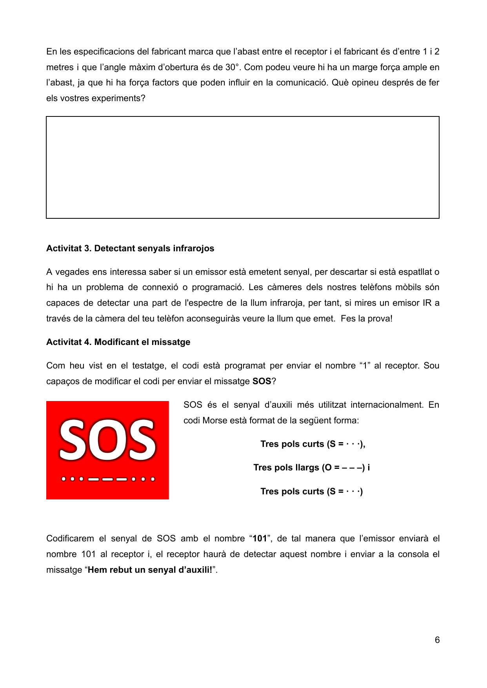
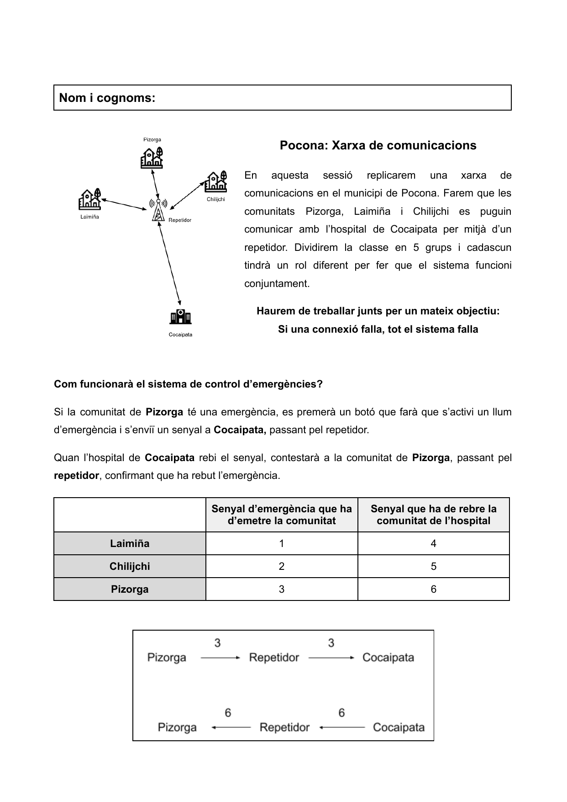
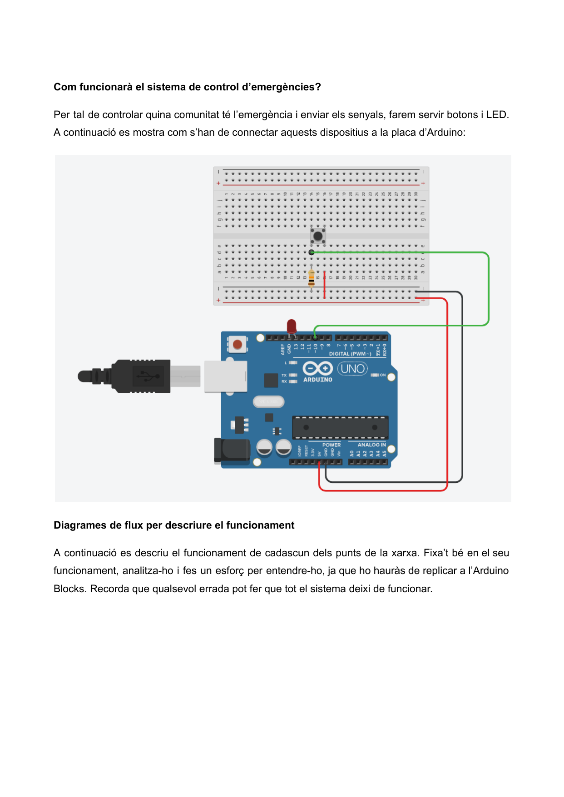
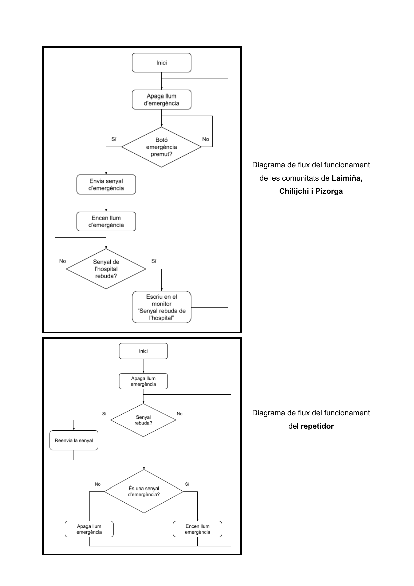
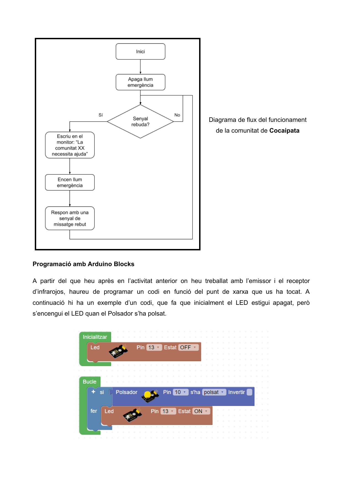

Sistemes de Comunicació, Infrarojos i Xarxa d'Emergències
Com simular un sistema de telecomunicacions comunitari real al laboratori de tecnologia: comunicació òptica per infrarojos amb Arduino Blocks i protocol de coordinació d'emergències mèdiques entre comunitats aïllades i l'Hospital de Cocaipata.
🎯 L'Objectiu de la Sessió de Laboratori
Després d'analitzar el relleu i dissenyar les torres, en aquesta sessió replicarem al taller una xarxa de comunicacions completa per al municipi de Pocona. Farem servir mòduls de radiació infraroja (LED i fotodíode) connectats a plaques Arduino Uno com a antenes direccionals òptiques. Treballarem en equip dividint la classe en 5 rols coordinats: Pizorga, Laimiña, Chilijchi, la Torre Repetidora Central i l'Hospital de Cocaipata.
⚠️ Regla d'Or de la Xarxa: Si una sola connexió falla, tot el sistema es col·lapsa!
1. Què és la Comunicació per Infrarojos (IR)?
L'espectre de llum infraroja se situa en una zona intermèdia dins de la classificació d'ones electromagnètiques pel que fa a la seva freqüència. Les ones amb freqüència per sobre de la infraroja són les ones visibles (com la llum del sol). Les de freqüència més baixa no es veuen (com les ones de ràdio o les microones del WiMAX), però lògicament que no es vegin no vol dir que no existeixin!

En la transmissió de dades a través de la radiació infraroja s'utilitzen díodes emissors de llum (LED IR) per generar un feix estret guiat per una lent. Aquest feix és modulat (encès i apagat ràpidament) per codificar els bits. Al costat del receptor, un fotodíode de silici converteix la llum infraroja que rep en un corrent elèctric polsant, filtrant la llum ambiental del sol o dels fluorescents.

2. Programació i Connexions amb Arduino Blocks
Per sincronitzar els equips fem servir la plataforma de programació visual per blocs Arduino Blocks:
- Emissor IR: Connectat al Pin Digital 3, utilitzant el protocol estàndard RC5 (12 bits) per transmetre valors numèrics.
- Receptor IR: Connectat al Pin Digital 2, configurat a 9.600 bauds per enviar les dades rebudes directament a la Consola Sèrie de l'ordinador.

3. Banc de Proves: Testatge de la Comunicació Òptica
Comprova les limitacions físiques del feix infraroig en 5 escenaris experimentals al taller:

Esbrineu la distància límit (entre 1 i 2 metres segons fabricant). Què passa quan col·loquem un paper, una carpeta o la mà? L'obstacle bloqueja completament el feix (manca de LoS òptic).
Comproveu l'angle màxim d'obertura (aprox. 30°). Poden les ones electromagnètiques rebotar contra una paret o sostre blanc per superar un obstacle? Feu la prova!

4. Pocona: Xarxa Comunitària de Control d'Emergències
Aquesta és l'aplicació final del projecte: connectar les comunitats rurals aïllades amb l'Hospital de Cocaipata a través de la torre repetidora central mitjançant un sistema de botó d'alarma i confirmació de missatge (ACK).

📟 Protocol de Senyals de Telemetria i Missatgeria
| Comunitat d'Origen | Senyal d'Emergència Emès (Botó Premut) | Senyal de Confirmació Rebut (Hospital ➔ Comunitat) |
|---|---|---|
| Laimiña | Codi 1 | Codi 4 (Rebut a l'Hospital) |
| Chilijchi | Codi 2 | Codi 5 (Rebut a l'Hospital) |
| Pizorga | Codi 3 | Codi 6 (Rebut a l'Hospital) |

5. Diagrames de Flux Lògics del Sistema
Abans de programar, cada equip ha d'entendre la lògica d'estats del seu dispositiu segons el rol assignat:


6. Prova de Validació de Robòtica i Programació
Un cop hagueu provat la transmissió entre el vostre emissor, el repetidor i l'hospital, responeu el formulari d'avaluació tècnica de la sessió: